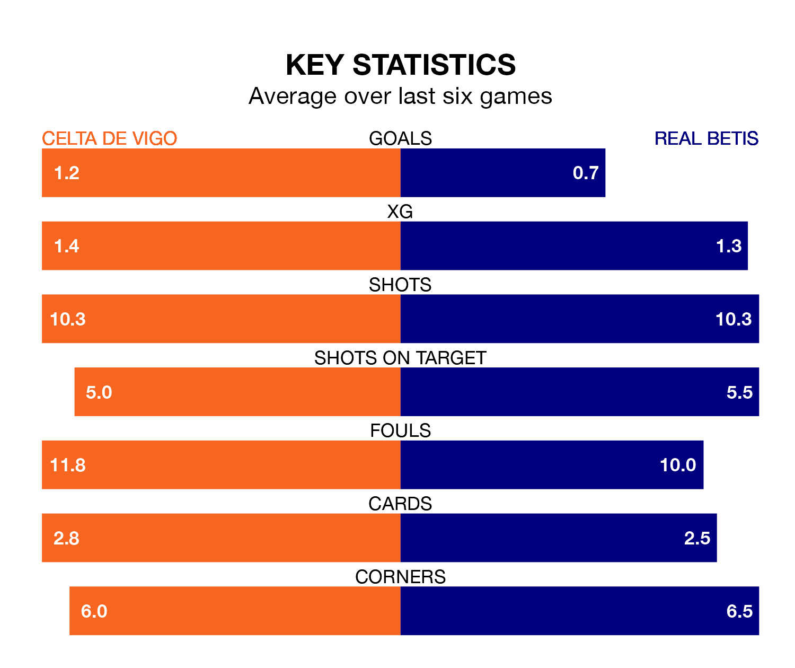

Real Betis face Celta de Vigo on Wednesday seeking to protect their formidable unbeaten run in La Liga.
Real Betis are unbeaten in 13, with four wins and nine draws, ahead of the 6.15pm kick-off.
They face a Celta team who have won one and drawn six over the same number of games.
Celta are 18th in the table after 18 games, of which they have won two and drawn seven, earning 13 points.
Betis are 11 places ahead of Celta de Vigo in seventh, with six wins and 10 draws putting them on 28 points.
In the last 10 years, Celta and Betis have played each other on 17 occasions. Celta won five of them, Betis six, and they drew six times.
On average, Celta de Vigo scored 1.6 goals and Real Betis 1.6 in those matches.
Their last meeting was on February 4, when Celta won 4-3 away.
With 18 goals in 18 games so far this season, the home side are scoring at below the league average rate with 1.0 goals per game. And they are conceding more than average, letting in 28 goals at a rate of 1.6 per game.
Real Betis are also below average scorers, with 1.1 goals per game, compared to a league average of 1.3. They have conceded 1.0 goal per game.
Celta's last match was on December 20, a 3-2 loss against Villarreal, with Anastasios Douvikas and Jørgen Strand Larsen getting the goals for Celta de Vigo.
Betis drew 1-1 with Girona last time out, on December 21, with Germán Pezzella on the scoresheet.
Wednesday's match will be refereed by Miguel Ángel Ortiz Arias, who has taken charge of 10 La Liga games so far this season, issuing four red cards and booking 36 players. He has awarded one penalty.
The last Celta game Ortiz Arias refereed was a 1-1 away draw with Real Sociedad on August 19. His last Betis match was their 2-0 win at home against RCD Mallorca on November 4.
Updated: 10:36, 03/01/24